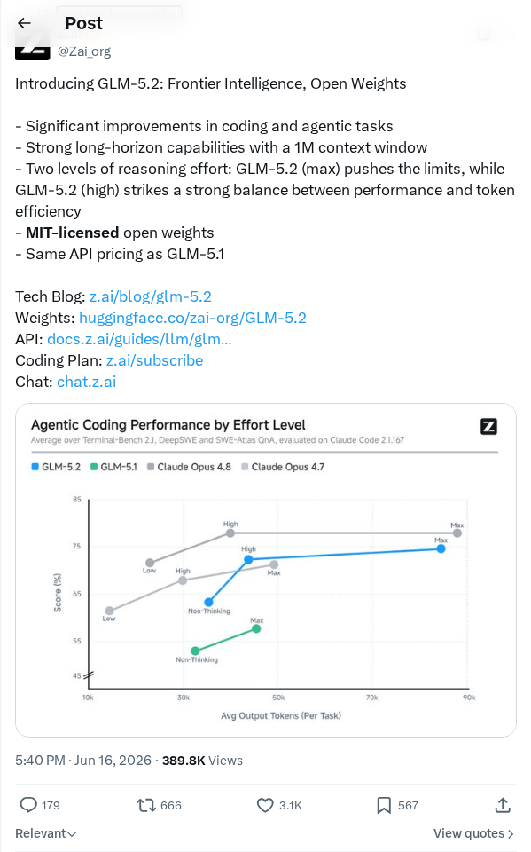
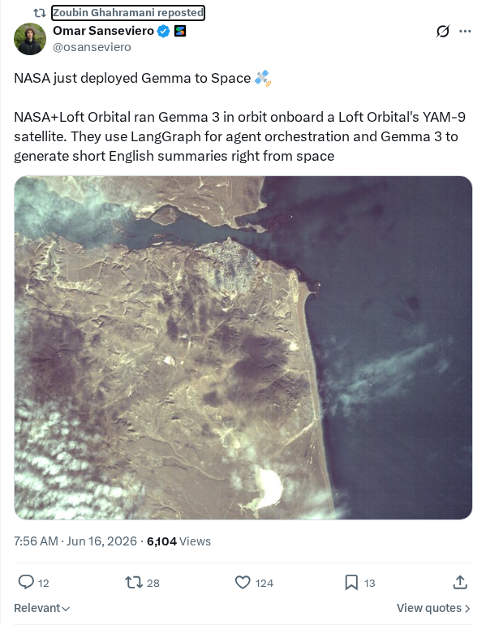
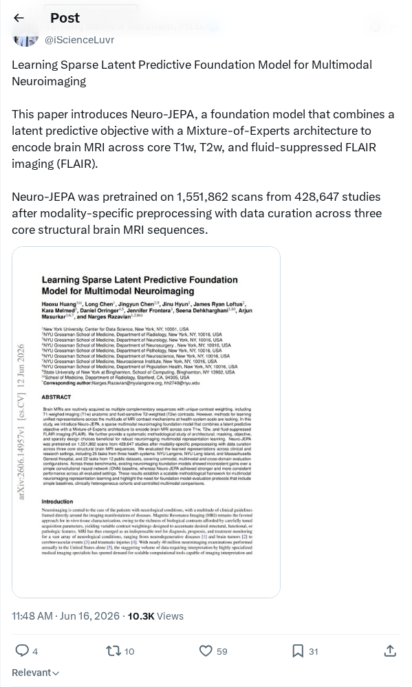
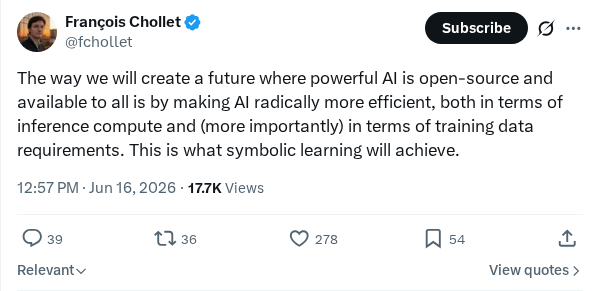
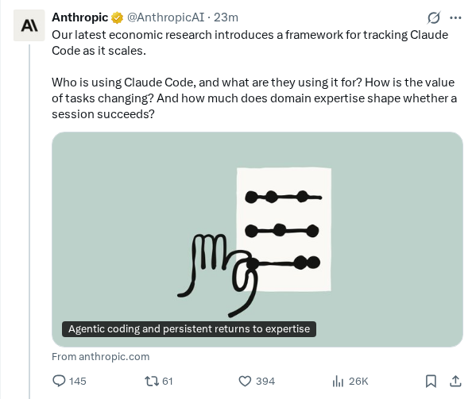

通过部署模拟在发布前预测模型行为
OpenAI引入了“部署模拟（Deployment Simulation）”评估方法，旨在预测人工智能模型在正式公开发布前在现实世界中的行为表现。通过利用以往交互的实际历史对话数据，该系统模拟部署场景，以更准确地评估安全参数并衡量模型响应。这种主动式方法旨在识别潜在问题，提升系统安全性，并提供在真实用户条件下模型性能的现实评估。
AI 前沿资讯、研究与趋势精选
OpenAI引入了“部署模拟（Deployment Simulation）”评估方法，旨在预测人工智能模型在正式公开发布前在现实世界中的行为表现。通过利用以往交互的实际历史对话数据，该系统模拟部署场景，以更准确地评估安全参数并衡量模型响应。这种主动式方法旨在识别潜在问题，提升系统安全性，并提供在真实用户条件下模型性能的现实评估。
SemiAnalysis发布了一份关于强化学习（RL）训练效率的研究，评估了开源权重框架和托管解决方案。报告指出，如Claude Opus 4.8在SWE-bench Pro上得分69.2%、在Terminal-Bench 2.1上得分74.6%等模型后训练能力，很大程度上取决于RL训练效率。通过与Prime Intellect、Modal、vLLM和Verl等合作伙伴的实验，分析表明系统效率取决于生成器、RL环境和训练器之间的吞吐量对齐，并采用了组相对策略优化（GRPO）作为主要的开源标准。
SpaceX宣布达成最终协议，以创纪录的600亿美元收购知名AI代码编辑器Cursor背后的初创公司Anysphere。此次大规模收购旨在将Cursor的生成式编程工具和下一代软件开发环境直接整合到SpaceX的航空航天、遥测及制导软件流水线中。通过实现软件工作流自动化，SpaceX计划显著缩短工程周期并减少人为错误。这笔交易是软件史上最大规模的收购之一，凸显了智能开发生态系统在深度科技领域日益增长的战略价值。
安全研究人员澄清称，此前引起联邦机构警觉的针对Fable 5大语言模型的争议性交互，实际上是由常规的代码调试提示词触发的，而非恶意越狱。当被要求调试一段标准代码时，模型生成的输出被标记为潜在危险。这一事件凸显了AI安全评估和监控系统中的关键脆弱性，即可能将良性的开发查询误解为恶意攻击。专家强调，亟需更细致的威胁建模，并加强监管机构与AI开发者之间的协作，以防止日常操作中出现误报。
荷兰正在开发GPT-NL，这是一个专门为主权而设计的、旨在契合荷兰语言、文化和道德价值观的大语言模型。该项目由荷兰应用科学研究组织（TNO）、SURF以及荷兰法医研究所共同牵头，旨在建立技术主权并减少对受外国控制的专有模型的依赖。GPT-NL将作为安全的国家数据基础设施，确保公共部门机构、研究人员和企业能够在符合本地法律管辖权的前提下，安全地运行高级自然语言处理任务。
阿里巴巴通义千问（Qwen）团队发布了Qwen-Robot套件，这是一个旨在提升物理世界智能和机器人应用水平的多模态基础模型套件。通过将自然语言理解与空间推理相结合，该软件允许物理系统处理复杂的传感器输入并执行精确的控制指令。该套件作为开源工具集发布，旨在帮助开发者构建能够导航多样化环境、理解人类意图并处理复杂物理任务的自主机器人。此次发布反映了行业向具身智能（Embodied AI）的持续转型，目标涵盖制造业、物流业和服务业。
一种名为“章鱼架构（Octopus Architecture）”的新设计模式被提出，旨在构建弹性、模块化的AI智能体。该架构背离了传统的单环结构，模仿章鱼的特性，利用中心模型进行高层推理，同时将专业的任务执行委托给半自主的子智能体。这种去中心化方法实现了并行执行，降低了中央协调器的认知负荷，并优化了异构环境下的内存使用。通过结合动态反馈回路，该架构旨在解决多智能体工作流中常见的性能瓶颈，包括级联故障、高延迟和Token使用效率低下问题。
本报告探讨了从依赖繁重的云基础设施转向在个人设备上本地运行机器学习模型的技术转变。得益于模型量化、专用硬件加速和优化软件框架的最新发展，高效的小型语言模型现在可以在消费级笔记本电脑和移动设备上顺畅运行。这一转变使AI的使用更加平民化，降低了总体部署成本，并通过将敏感用户数据保留在本地提高了隐私保护水平。作者总结认为，本地化执行已成功从利基爱好者的追求演变为面向主流开发者的切实、低延迟解决方案。
本技术报告介绍了SubQ 1.1 Small，这是一款旨在优化计算占用空间，同时保持基准竞争力的超高效语言模型。报告概述了关键的架构改进、训练数据选择以及用于缩小模型整体内存占用的先进模型量化技术，且并未损害其逻辑推理能力。通过强调参数效率和低延迟推理，SubQ 1.1 Small为边缘部署应用提供了一个可行的方案，证明了小型模型在搭配高度优化的训练流水线时，也能具备强大的推理能力。
GateGPT展示了一种创新的Transformer模型硬件实现，在80 MHz频率的FPGA上实现了每秒56,000个Token的吞吐量。该架构在硬件层面原生实现了KV缓存，最大限度地减少了延迟并优化了模型推理过程中的数据传输流水线。通过在低时钟频率下实现高计算速度，GateGPT展示了定制化硬件设计如何实现能源效率的最大化。这一进展为在功耗受限的边缘平台上执行大语言模型提供了一种有前景的方法，凸显了FPGA硬件加速可以媲美传统GPU执行。
Anthropic应用AI团队发布了将Claude Managed Agents部署到生产环境的操作指南。该技术资源概述了软件工程师处理基础设施挑战（如安全凭证管理、隔离沙箱和可观测性）的实用策略。本指南旨在帮助软件工程师将智能体应用程序从实验原型转变为稳健、可扩展的企业级系统。额外文档详细介绍了业务用例和战略动机，以帮助优化智能体在整个部署流水线中的性能。

Zai正式发布了GLM-5.2，这是一款开放权重的语言模型，旨在提高复杂编码和智能体工作流的性能。该模型具有针对多步推理和自主任务执行优化的架构。在LMSYS Chatbot Arena等行业基准测试中，GLM-5.2展示了强大的智能体能力，表现媲美谷歌Gemini等专有系统，同时基于MIT许可证开放，以加速全球AI研究社区的发展。
Runway推出了Gen-3 Alpha Turbo，这是其视频生成技术的优化版本，专为实现更快的推理速度而设计。该模型旨在协助创意专业人士，在保持时间一致性和高真实感的同时降低生成延迟。Gen-3 Alpha Turbo已集成到Runway平台中，允许用户在文本生成视频、图像生成视频和风格化视频生成任务中进行即时实验，代表了行业向高效、高分辨率生成式视频生产工作流的转型。

NASA与Loft Orbital合作，已成功将谷歌的Gemma 3 AI模型直接部署到轨道上的YAM-9卫星中。此项技术演示展示了在轨道上的专用边缘计算硬件内执行大语言模型的可操作性。此次部署旨在促进对空间采集数据的实时推理和自主处理，消除了对地面站数据传输网络的标准依赖。

研究人员推出了Neuro-JEPA，这是一款专为多模态神经成像数据分析设计的预测基础模型。该架构利用稀疏潜在预测框架，从海量脑成像数据集中学习生物表征。通过提高对复杂神经模式的结构性理解，该模型旨在为计算神经科学和医学成像研究人员提供可扩展、可解释的诊断和数据集成工具，以评估高维生物学输入。

Francois Chollet提出了一份战略大纲，建议将符号学习作为实现开源和民主化人工智能的关键技术途径。他认为，为了确保尖端架构能在没有大规模计算资源支持的情况下运行，必须实现极端的模型效率。通过优化推理计算和训练数据需求，符号学习范式可以显著降低全球开发者社区的硬件准入门槛。

Anthropic发布的研究结果显示，在使用大语言模型时，用户领域专业知识与编程成功率之间存在显著相关性。虽然专业专家通过使用领域特定术语和高级查询模式获得了最高保真的编程结果，但中间用户与专家程序员之间的性能差距仍然较小。研究表明，基础领域精通足以有效地利用生成式模型。
研究人员推出了VibeThinker-3B，这是一款具有30亿参数的稠密型小型语言模型，旨在推动可验证推理的边界。该模型使用“谱到信号（Spectrum-to-Signal）”后训练范式开发，集成了基于课程的监督微调、多领域强化学习和离线自蒸馏技术。VibeThinker-3B在AIME26基准测试中得分94.3（使用声明级测试时缩放提升至97.1），并在LiveCodeBench v6上达到80.2的Pass@1，表现媲美甚至超过了GLM-5和Gemini 3 Pro等更大的专有模型。
技术报告介绍了Ling-2.6和Ring-2.6系列模型，这是一组万亿参数规模的模型，旨在平衡智能体工作流中的低延迟响应和深层推理。这些系统基于Ling-2.0基础模型构建，集成了“闪电注意力（Lightning Attention）”与多头潜在注意力（MLA），以优化长上下文处理能力。为了实现在大规模环境接地数据上的稳定强化学习，作者提出了KPop，这是一个跨代码编写、搜索和工具使用任务的异步调度框架。这些模型和检查点将开源，以支持实用型、高吞吐量的智能体系统。
Qwen-RobotWorld技术报告引入了一种语言条件视频世界模型，旨在统一具身智能。该模型具有60层的双流扩散Transformer，将冻结的Qwen2.5-VL语义与视频VAE潜在空间结合。它在EWK上进行训练，该语料库包含跨越20种机器人形态和500个动作类别的860万个视频-文本对，并在EWMBench和DreamGen Bench上名列前茅。它为下游机器人控制提供合成数据生成、虚拟环境和语言引导的规划信号。
英伟达推出了Nemotron 3 Ultra，这是一款混合Mamba-Attention语言模型，总参数量5500亿，激活参数量550亿。该模型在20万亿个文本Token上进行预训练，并支持长达100万个Token的扩展上下文长度。通过整合LatentMoE、多Token预测和NVFP4预训练技术，Nemotron 3 Ultra在保持高精度的同时，推理吞吐量比同类开源模型高出六倍，非常适合长时间运行的自主智能体工作流。
DreamX-World 1.0是一款通用的交互式世界模型，旨在实现可控的长时序文本/图像转视频生成。该模型利用因果强制（Causal Forcing）方法、DMD式蒸馏和记忆条件化场景持久性（Memory-Conditioned Scene Persistence），实现了持久的相机导航和可提示事件，同时防止了长序列中的视觉漂移。该系统集成了轻量级投影位置编码（E-PRoPE），在八块英伟达RTX 5090 GPU上运行速度高达16 FPS。在5秒的基础评估中，其总得分84.76，超越了HY-WorldPlay 1.5。
研究人员推出了CODA-BENCH，这是一个新的评估基准，旨在评估数据密集型环境中的代码和数据智能。该基准在一个集成Kaggle生态系统的沙盒Linux环境中运行，包含来自31个社区的1,009项任务。每个任务环境平均包含980个文件，强制智能体搜索相关资源并编写用于分析任务的代码。对高级自主智能体的初步评估显示其成功率仅为61.1%，突显了将代码执行与复杂文件系统结合时存在显著的能力差距。
研究团队提出了ExpRL，这是一种探索性强化学习方法，旨在对人类书写的问答数据大规模语料进行LLM中途训练。ExpRL不使用参考答案进行模仿学习，而是将其作为奖励支架。模型生成策略内的推理轨迹，由LLM评判员根据隐藏的参考答案进行评估，以分配过程级和结果级奖励。在具有挑战性的数学任务上测试表明，ExpRL产生了比监督微调和GRPO更强的RL启动效果，可作为下游稀疏奖励RL的更优初始化方案。
研究团队开发了Tangram，一个为多轮LLM服务实现非均匀键值（KV）缓存压缩的框架。Tangram通过利用离线校准的“头注意力保留规律（head-wise retention regularities）”，避免了运行时内存碎片化和GPU负载不平衡。关键组件包括在调度时固定内存占用的“预算预留（Budget Reservation）”、对类似预算注意力头进行分组的“参差分页（Ragged Paging）”以及用于GPU分区的“提前负载均衡（Ahead-of-Time Load Balancing）”。基于vLLM构建，Tangram与完整KV基准相比，端到端吞吐量提高了2.6倍。